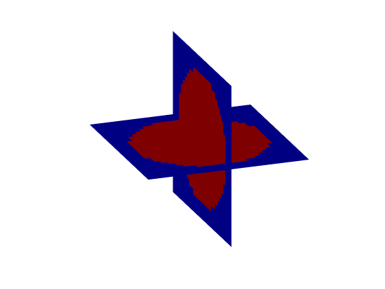

beamPlot
Plot volumetric data using intersecting planes.
Syntax
beamPlot(mat) beamPlot(mat, plot_yz) beamPlot(xy_slice, xz_slice)
Description
beamPlot plots 3D volumetric data as intersecting planes using
slice. The data is assumed to be indexed as (x, y, z). The central x-y and x-z planes are extracted and plotted as intersecting planes. The first y-z plane can also be plotted by setting the optional input plot_yz to true. This orientation is useful for plotting the beam patterns produced by ultrasound transducers facing in the x-direction.
beamPlot can alternatively be called with two 2D slices which are plotted as intersecting planes indexed as (x, y) and (x, z). The slices must have the same size in the x-direction.
Examples:
beamPlot(makeBall(30, 30, 30, 15, 15, 15, 12)); beamPlot(makeDisc(40, 30, 20, 15, 10), makeDisc(40, 20, 20, 10, 5));
Inputs
mat |
3D matrix to plot |
plot_yz |
Boolean controlling whether the first y-z plane is displayed |
xy_slice |
slice to plot in the x-y plane |
xz_slice |
slice to plot in the x-z plane |
See Also
slice